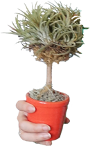

 Come visit the new greenhouse and check out the colonies with our recently acquired exotic species.
If you need a specific type of plant for your landscaping project, we can create a new cultivar to your specifications.
No project is too big or small. We can populate an entire botanical garden or create a one-of-a-kind greenhouse.
Be the first to grow a tree of unknown origin.
We pride ourselves on generating growing art and flora that are out of this world. Our scientists and horticulturists are trained in the newest growth techniques and equipment. We have been cultivating extraordinary plants and landscaping gardens for over 90 years. We have 7 offices in North America, and botanical gardens in New York, Oregon, and San Francisco.
We host events in cities nationwide to showcase our newest varieties and give you an opportunity to see some of the plants in person. Visit the Events page to find out about upcoming events happening in your location.
Horticulture cloning refers to generating descendants of a single plant by vegetative reproduction. Many horticultural plant cultivars are clones, that have been derived from a single individual, and then multiplied by a process other than sexual reproduction. For example, some strains of European grapes are clones that have been propagated for over two millennia. Other examples of clones are the potato and banana plants.
Grafting is a technique that is similar to cloning, because the shoots and branches from the graft result in the creation of a genetic clone of a single individual plant. However, this type of cloning is typically classified as an entirely different kind of operation.
Contact us to learn more about plant conservation, landscape restoration, landscaping, garden design, tree trimming and shrub maintenance. Our staff is experienced in plant propagation and cultivation to improve plant growth, yields, quality, and resistance to insects.